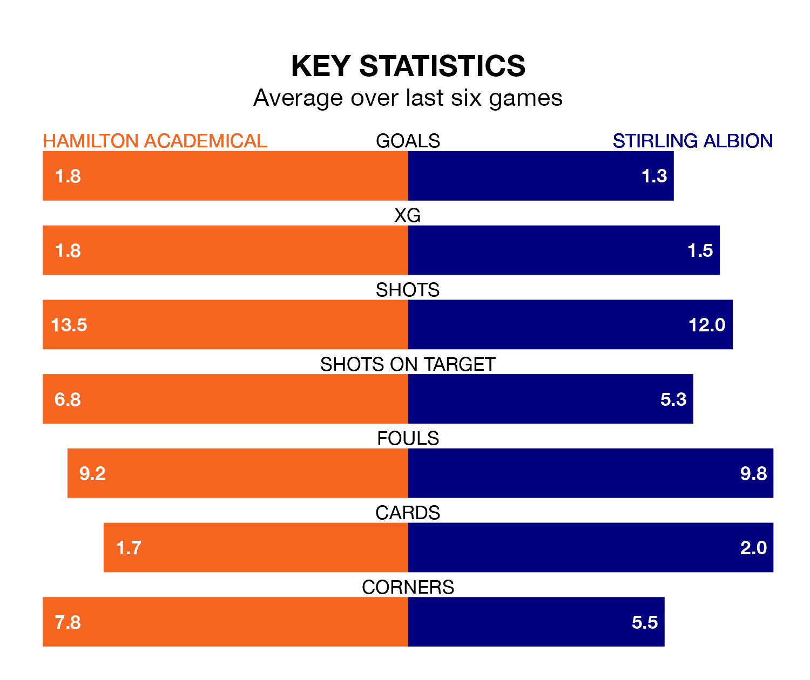

Two of League One's meanest defences go head-to-head at the Fountain of Youth Stadium on Saturday, when Hamilton Academical host Stirling Albion.
Only one side – Falkirk – has conceded fewer goals than Hamilton Academical to date: the home side have let in just 22 goals in 28 games.
The Binos have conceded 43 goals in 28 games, giving them the joint-fourth tightest back line so far this season.
Key to the Accies's home form has been Jamie Smith, who has allowed 0.96 goals past him per 90 minutes, compared to 1.46 for Blair Currie in the opposite net.
Hamilton Academical are second in the table after 28 games, of which they have won 16 and drawn seven, earning 55 points.
Stirling are four places behind the Accies in sixth, with eight wins and seven draws putting them on 31 points.
In Kevin O'Hara, the hosts have one of the league's sharpest shooters so far this season. He has notched 11 goals in 28 appearances, to sit third in the scoring charts.
His goal rate of one every 197 minutes is quicker than that of Dale Carrick, Albion's top scorer with a goal every 252 minutes, and a total of eight goals in 26 games.
Hamilton Academical are in mixed form in League One, with two wins and a draw from their last six games.
With a win and two draws over that period, the Binos' form is slightly worse – they have taken five points from 18, compared to Hamilton Academical's seven.
In the last three years, Hamilton Academical and Stirling have played each other on three occasions. Hamilton Academical won one of them and they drew the other.
Their last meeting was on February 27, when they played out a 0-0 draw.
Hamilton Academical's last match was on March 9, a 1-0 win against Edinburgh City, with Ahkeem Shavon Rose getting the goal for the Accies.
Stirling lost 2-1 against Falkirk last time out, also on March 9, with Paul McLean on the scoresheet.
Updated: 15:10 (UTC), 15/03/24